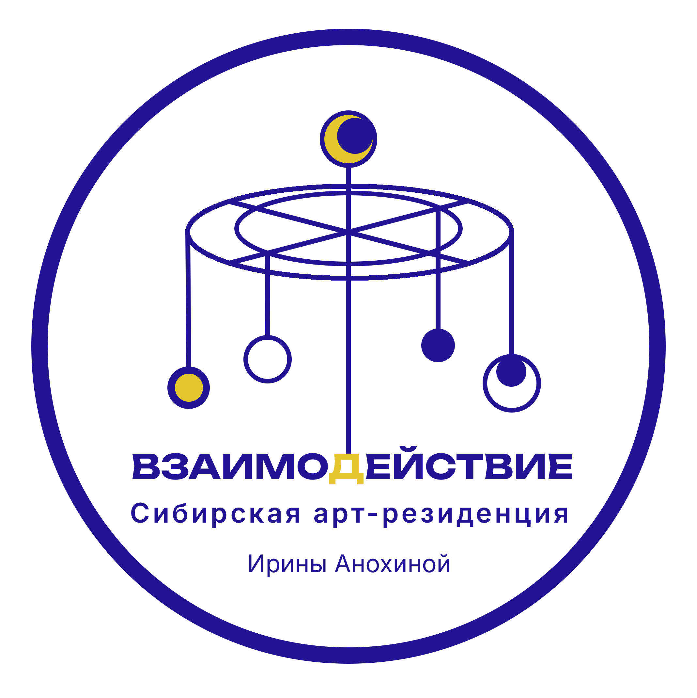

Арт-резиденция ВзаимоДействие
СПИРИНО · НОВОСИБИРСКАЯ ОБЛАСТЬ

Арт-резиденция
ВзаимоДействие
Что такое ВзаимоДействие?
ВзаимоДействие — это пространство для самовыражения, где каждый может делиться идеями, получать поддержку и не бояться быть собой. Здесь важна искренность, свобода творчества и взаимная поддержка. Каждый участник играет важную роль в создании новых возможностей для искусства. Здесь искусство и взаимодействие становятся частью единого процесса, где каждый получает возможность экспериментировать и расти. В этом пространстве уязвимость — это сила.
Основные принципы резиденции
- Отсутствие коммерческой выгоды. Оплата участников покрывает только расходы на питание, бензин и материалы. Всё остальное — бесплатно.
- Нет конкурсного отбора. Я не оцениваю искусство, не критикую и не устанавливаю стандарты. Во ВзаимоДействии важно только одно — возможность быть собой, творить без давления и ограничений. Здесь нет места критике или оценкам — лишь поддержка, свобода и самовыражение.
Возможности для участников
- Эксперименты в творчестве. Возможность исследовать новые медиа и формы, черпая вдохновение из природы.
- Горизонтальные связи. Мы создаём условия для обмена опытом и идеями, способствуя развитию долгосрочных коллабораций.
- Развитие культуры в регионе. Участие помогает популяризировать современное искусство в Сибири и развивать культурные инициативы.
- Обмен знаниями. Мастер-классы и воркшопы помогают осваивать новые техники и подходы.
- Медиа-поддержка. Фотосъёмка и видео для продвижения проектов участников.
- Финальная выставка. Презентация работ и создание новых возможностей для сотрудничества.
Миссия
ВзаимоДействие направлено на развитие современного искусства в Сибири. Мы строим горизонтальные связи между художниками и культурными деятелями, поддерживая новые инициативы и проекты. Наша цель — укреплять культурное сообщество и развивать регион как центр современного искусства.
Местоположение
Резиденция расположена в селе Спирино, Новосибирской области. Уютный дом со всеми необходимыми удобствами (душ, туалет, стиральная машина, баня) и живописная природа создают мягкие условия для вдумчивой, сосредоточенной работы.

«В Спирино время течёт иначе: тишина, поле и дом становятся частью процесса, а не фоном.
Здесь можно переключиться с выживания на чувствование.»
Контакты
Куратор: Ирина Анохина
E-mail: irina.anokhina.art@gmail.com
*Соцсеть, деятельность которой может быть признана экстремистской на территории РФ.